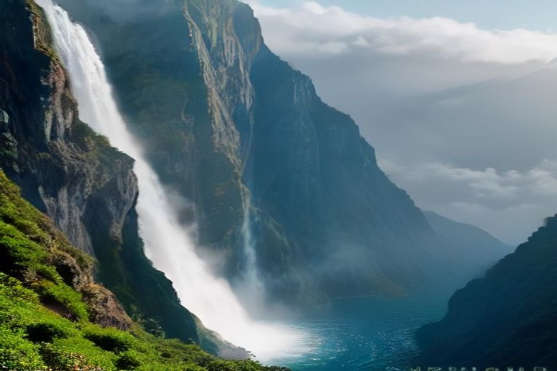
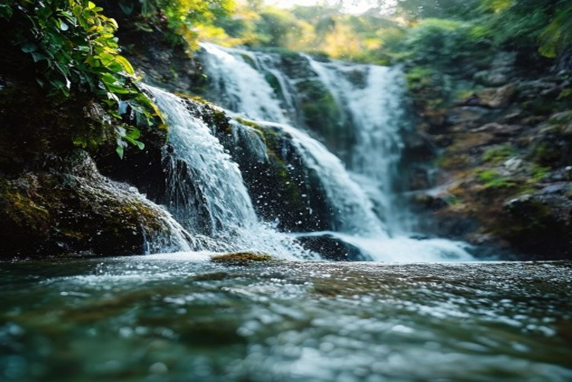

O interior da Madeira recebe algumas das chuvas mais intensas de Portugal e, com séculos de levadas construídas para levar essa água até à costa, há cascatas quase a cada curva, desde uma cortina de cem metros a cair numa lagoa da floresta laurissilva até uma cascata à beira da estrada que se atravessa de carro, com as janelas abertas. Aqui ficam as dez que mais vale a pena ir ver e como chegar exatamente a cada uma.
A Madeira tem mesmo cascatas a sério?
Sim, e mais do que a maioria dos visitantes espera de uma ilha portuguesa. O interior montanhoso retém a humidade do Atlântico durante todo o ano e alimenta ribeiras que se despenham depressa por arribas de basalto até desfiladeiros de floresta laurissilva, e as históricas levadas da ilha foram construídas precisamente para levar essa água da nascente até aos terrenos agrícolas. O resultado é um conjunto verdadeiramente denso de cascatas com nome, várias delas entre os locais mais fotografados da ilha.

1. Cascata do Risco, Rabaçal
O Risco é a cascata mais emblemática da Madeira: uma única fita de cerca de 100 metros a descer por uma parede coberta de musgo até ao vale do Rabaçal. Chega-se pela Levada do Risco, um percurso plano e fácil de 30-40 minutos em cada sentido a partir do parque de estacionamento do Rabaçal, o que faz dela uma das cascatas mais altas da ilha com um dos acessos mais curtos.
2. Lagoa do Vento, Rabaçal
Um pequeno prolongamento depois do Risco, na mesma rede de percursos, leva à Lagoa do Vento, uma cascata mais pequena que alimenta uma piscina natural escondida num desfiladeiro estreito. Juntar as duas dá uma das melhores combinações de cascatas da ilha numa única caminhada de meio dia.
3. 25 Fontes, Rabaçal
Em vez de uma só cascata, as 25 Fontes são um anfiteatro natural onde dezenas de nascentes e pequenas quedas de água escorrem por paredes de basalto cobertas de musgo até a uma única lagoa. Partilham o ponto de partida com o Risco, por isso a maioria dos visitantes faz os dois no mesmo passeio, com cerca de três horas, ida e volta, a partir do Rabaçal.
4. Caldeirão Verde, Santana
No final do percurso PR9, a partir do Parque Florestal das Queimadas, o Caldeirão Verde cai cerca de 100 metros para uma pequena piscina natural rodeada de rochedos e floresta laurissilva, depois de se atravessarem túneis estreitos escavados na rocha pelos construtores de levadas do século XIX. Exige mais do que as cascatas do Rabaçal, cerca de 13km, ida e volta, mas é amplamente considerado o cenário de cascata mais dramático da Madeira.
5. Véu da Noiva, Seixal
O Véu da Noiva cai cerca de 30 metros na vertical por uma arriba vulcânica diretamente para o Atlântico, na costa norte, perto do Seixal, e é das cascatas mais fáceis de ver na Madeira: avista-se de um miradouro junto à estrada, mesmo ao lado do estacionamento, sem qualquer caminhada. É paragem natural em qualquer viagem pela costa norte.
6. Cascata dos Anjos, Ponta do Sol
A cascata mais invulgar da Madeira cai diretamente sobre a antiga estrada da costa entre a Ponta do Sol e a Madalena do Mar, por isso pode parar o carro e passar mesmo por baixo dela. É menos uma caminhada e mais um duche à beira da estrada, e uns dos minutos mais fotografados da costa sul.
7. Água d'Alto, Faial
Conhecida localmente como Cascata do Faial, esta queda de cerca de 30 metros na Ribeira do Faial cai numa lagoa de água límpida no meio da floresta, perto do Faial, na costa norte, próximo de Santana. O caminho é curto, cerca de 3km, ida e volta, com pouco desnível, o que a torna uma das cascatas de floresta mais fáceis de alcançar.
8. Cascatas da Levada do Rei, São Vicente
Em vez de uma única queda, o percurso da Levada do Rei acompanha o Ribeiro Bonito por um desfiladeiro cada vez mais estreito, de aspeto selvagem, ladeado por várias cascatas mais pequenas, e termina num atmosférico anfiteatro de rocha. Com cerca de 9,8km, ida e volta, é uma alternativa mais longa e sossegada aos percursos mais concorridos do Rabaçal e de Santana.
9. Garganta Funda, Ponta do Pargo
Escondida na zona do Pedregal, perto da Ponta do Pargo, na costa oeste mais selvagem, a Garganta Funda é uma das cascatas menos visitadas da Madeira precisamente por ser a mais distante do Funchal. Recompensa a viagem com um desfiladeiro estreito e de paredes íngremes, que recebe uma fração da gente das cascatas mais conhecidas da ilha.

10. Fajã da Nogueira, serra central
Com início na antiga Central Elétrica da Fajã da Nogueira, perto do Ribeiro Frio, este percurso circular segue por caminhos estreitos e túneis escavados à mão ao longo de uma levada, passando mesmo por baixo de várias cascatas que se despenham no desfiladeiro lá em baixo. É uma das propostas mais aventureiras desta lista: leve uma lanterna para os túneis.
É preciso reservar ou pagar para as ver?
Os dois percursos mais concorridos, o Risco/25 Fontes e o Caldeirão Verde, estão agora sujeitos ao sistema de reservas SIMplifica da Madeira: uma reserva gratuita com horário e uma pequena taxa de entrada, criada para controlar a afluência nas levadas mais procuradas da ilha. As cascatas junto à estrada, como o Véu da Noiva e a Cascata dos Anjos, não precisam de reserva e são gratuitas.
As cascatas da Madeira não são um desvio da ilha: para grande parte do interior, são a razão de ser da viagem.
Andar atrás de cascatas no interior significa horas em estradas de montanha e caminhos de levada, e é exatamente por isso que a costa é uma excelente segunda metade da viagem. Um passeio de barco privado a partir do Funchal troca o musgo e a neblina por águas calmas do Atlântico, um mergulho numa enseada escondida e, com um pouco de sorte, golfinhos a acompanhar a proa no regresso.